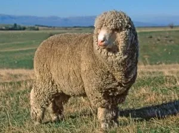
Merino
Famoso pela lã fina, ondulada e macia. Tem velo denso; machos de muitas linhagens possuem chifres em espiral. Há linhagens de dupla aptidão, mas a lã é seu grande destaque.
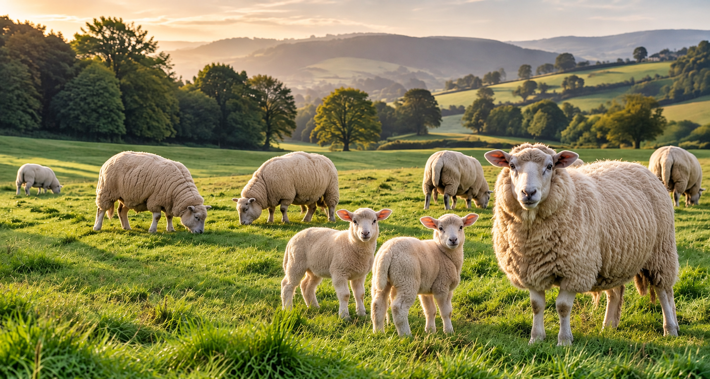
Entre campos, lã e pequenos balidos,
um universo de cuidado e descobertas.
Conheça a arte de
criar ovinos.
Criar ovelhas é aprender a observar. É perceber a qualidade do pasto, reconhecer um filhote saudável e entender que cada fase da vida pede um cuidado diferente.
A ovinocultura reúne alimento, fibras, trabalho e uma relação antiga entre as pessoas e a terra. Este caderno percorre os conteúdos da especialidade — e abre a porteira para a experiência no campo.
Algumas se destacam pela lã. Outras, pela carne ou pelo leite. Conhecer a raça é o primeiro passo para entender o que ela precisa e o que pode produzir.

Famoso pela lã fina, ondulada e macia. Tem velo denso; machos de muitas linhagens possuem chifres em espiral. Há linhagens de dupla aptidão, mas a lã é seu grande destaque.
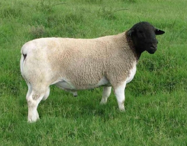
Corpo musculoso, cobertura curta de pelos e lã e, na variedade mais conhecida, cabeça preta e corpo branco. Produz principalmente carne e pele de qualidade. O White Dorper tem cabeça branca.
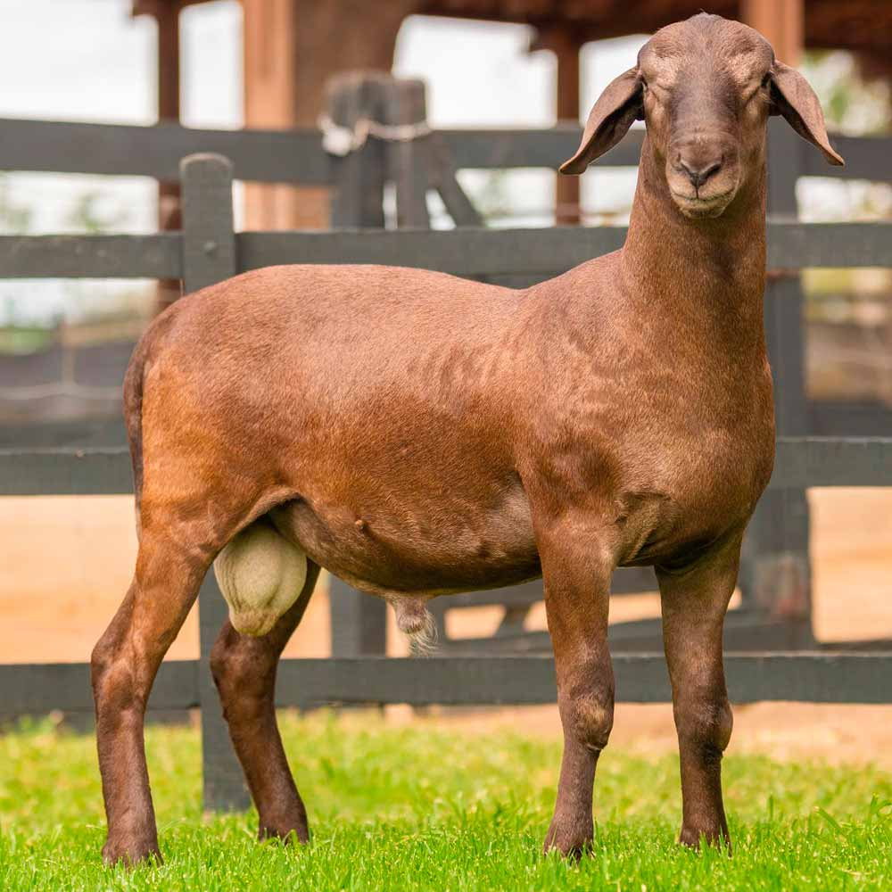
Raça deslanada, de pelos curtos, orelhas compridas e caídas e cores variadas. Adaptada ao calor, fornece carne e pele. Não é uma raça para produção comercial de lã.
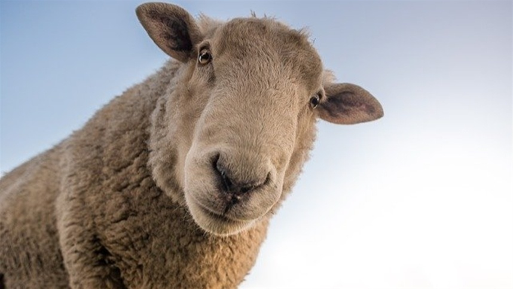
Na linhagem leiteira, destaca-se pela produção de leite, utilizado em queijos como o Roquefort. Possui face e pernas sem lã e velo menos abundante. Existem também linhagens de corte.
Escolha conforme clima, resistência e adaptação local, objetivo de produção, fertilidade, habilidade materna, facilidade de parto, qualidade dos cascos e disponibilidade de animais e assistência técnica. Considere alimentação, mão de obra, custo e compradores de carne, leite ou lã. Alta produtividade não compensa falta de adaptação.
Procure um animal alerta, que acompanhe o grupo, com olhos vivos, mucosas rosadas, respiração tranquila e crescimento compatível com a idade. Observe pernas firmes, cascos íntegros, boca bem alinhada, umbigo cicatrizado e ausência de diarreia, tosse e caroços. Verifique origem, identificação, histórico sanitário e desempenho da mãe; animais para reprodução também precisam de avaliação reprodutiva.
Não existe um tamanho mínimo universal que garanta sucesso. Como proposta de aprendizagem, um grupo de 5 a 10 matrizes, com apoio técnico, é mais manejável que um grande rebanho. Isso não é uma regra da especialidade nem uma escala de viabilidade econômica.
Ovinos são gregários: precisam de companhia. Calcule primeiro a capacidade do pasto, a reserva para a seca, o abrigo, o orçamento e o tempo diário. Um reprodutor próprio nem sempre compensa para poucas matrizes; planeje a reprodução com um técnico e cuide da biossegurança.
No Brasil, costuma ser favorável iniciar quando há boa oferta de forragem — frequentemente no início das chuvas, depois de preparar as instalações. Não há mês único: no Sul, frio e geadas pesam; no semiárido, chuva e reserva alimentar são decisivos. Planeje a monta para que parto e lactação coincidam com boa nutrição.
Ovinos vivem em campos temperados, regiões montanhosas, áreas tropicais e semiáridas. O segredo não é um único clima: é a raça adaptada, alimento suficiente e proteção contra os extremos.
| Situação | Referência de planejamento | O que observar |
|---|---|---|
| Ovelhas adultas soltas no estábulo | 1,1–1,5 m² por animal | Adultas em manutenção até metade da gestação; ampliar para animais grandes e matrizes com crias (cerca de 1,4–1,9 m² por conjunto). |
| Adultas soltas ao ar livre | 2,3–3,7 m² por animal | Área de pátio ou curral externo, não pastagem. Precisa de drenagem, sombra e acesso a abrigo. |
| Filhotes soltos no estábulo | 0,75–0,95 m² por cordeiro desmamado | Referência para animais em crescimento; recém-nascidos ficam com a mãe na maternidade. |
| Pastagem para gestantes | Depende da capacidade de suporte | Não há área fixa universal. Exemplo de cálculo: se o técnico recomenda 5 matrizes/ha, cada uma corresponde a 2.000 m²; com 10/ha, a 1.000 m². Inclua descanso dos piquetes e reserva de seca. |
| Cocho para adultas | 40–50 cm lineares por cabeça | Quando todas recebem alimento restrito ao mesmo tempo. Conte apenas as bordas acessíveis. |
| Cocho para gestantes | 40–50 cm lineares por cabeça | Mesma referência para alimentação simultânea, ampliando conforme porte e competição. Não confundir com cocho de consumo à vontade. |
| Parto e vínculo mãe–cria | 1,5–2,3 m² por baia individual | Aproximadamente 1,2 × 1,2 m a 1,5 × 1,5 m; ampliar para matrizes grandes ou múltiplos. Piso seco, higiene e supervisão. |
Medidas aproximadas convertidas das orientações da Penn State Extension e UMass Extension. Adapte ao peso, ao clima e ao sistema de criação com assistência técnica.
Ovelhas são ruminantes. O rúmen permite aproveitar alimentos fibrosos, mas o cordeiro nasce com esse sistema ainda em desenvolvimento.
O colostro é prioridade nas primeiras horas e deve ser recebido o quanto antes. Depois, leite materno; desde a primeira ou segunda semana, pequenas quantidades de concentrado próprio para cordeiros, feno de qualidade e água limpa favorecem o desenvolvimento do rúmen. Órfãos precisam de sucedâneo específico e orientação.
Pasto ou feno de boa qualidade, água, mistura mineral para ovinos e concentrado conforme crescimento e oferta de forragem. O animal deve já consumir sólidos com regularidade. A retirada do leite é gradual e depende também do peso e da saúde, não só da idade.
No início, dieta equilibrada de manutenção. Nas últimas 4–6 semanas, aumentam as necessidades de energia e proteína, especialmente com gêmeos; pode ser preciso suplementar. Evite magreza, obesidade e mudanças bruscas. A gestação dura aproximadamente 147 dias.
A matriz com filhote pequeno tem alta demanda de nutrientes e água. Ofereça volumoso excelente e suplementação de energia e proteína calculada para peso, produção e número de crias. Acompanhe úbere, condição corporal e ganho de peso dos cordeiros.
Pasto, feno ou silagem de qualidade formam a base. Um adulto em manutenção pode ingerir cerca de 2–3% do peso vivo em matéria seca por dia; isso não equivale ao peso do capim fresco. Concentrado só quando necessário; água e mineral apropriado sempre disponíveis.
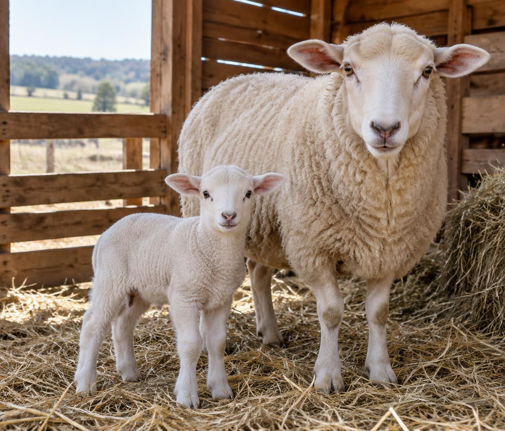
Em sistemas a pasto, 90 a 100 dias é uma referência comum; há manejo entre 60 e 120 dias. Desmames precoces exigem bom consumo de sólidos e acompanhamento. Um cordeiro doente, muito leve ou sem adaptação ao alimento sólido não deve ser desmamado só porque atingiu uma data.
A separação definitiva da mãe costuma acompanhar o desmame: o cordeiro segue com outros jovens, em ambiente seguro, com boa dieta e monitoramento. Isso reduz a demanda da matriz, permite sua recuperação e ajusta a alimentação dos dois grupos. Evite reunir novamente até a lactação cessar.
Machos inteiros devem ser separados das fêmeas antes da maturidade sexual, que pode começar aos 3–5 meses em algumas raças, para evitar coberturas indesejadas e consanguinidade. O calendário deve considerar raça e crescimento.
“Cuidar de um rebanho começa com uma coisa simples:
aprender a olhar para cada animal.”
A seguir, uma síntese para o relatório de saúde: problemas comuns, sinais de alerta e medidas de prevenção e atendimento. Diagnóstico e tratamento cabem ao médico-veterinário.
Sinais: emagrecimento, fraqueza, mucosas pálidas e edema sob a mandíbula; diarreia pode ocorrer, mas não é típica em todos os casos de Haemonchus.
Prevenir e atender: manejar lotação e pasto, fazer exames de fezes e avaliação FAMACHA por pessoa treinada. Vermifugar seletivamente com orientação e verificar eficácia: uso indiscriminado causa resistência.
Sinais: claudicação, dor, mau cheiro, lesões entre os dedos e descolamento do casco nos casos de podridão.
Prevenir e atender: piso seco, inspeção, quarentena e isolamento dos afetados. O veterinário define manejo dos cascos, pedilúvio adequado e medicamentos; cortes excessivos agravam lesões.
Sinais: enterotoxemia pode causar morte súbita, diarreia e alterações nervosas; tétano provoca rigidez e espasmos após contaminação de feridas.
Prevenir e atender: vacinação com esquema e reforços definidos pelo veterinário, higiene de procedimentos e dieta sem mudanças bruscas. Suspeitas são urgências; o atendimento precoce nem sempre reverte casos graves.
Sinais: abscessos em linfonodos, com material espesso, e perda de condição; também pode haver abscessos internos sem caroços visíveis.
Prevenir e atender: isolar, desinfetar instrumentos de tosquia e impedir contaminação do ambiente. Não abrir caroços no pasto. Controle, possível descarte e manejo clínico são decisões veterinárias.
Sinais: no fim da gestação, falta de apetite, apatia, dificuldade para andar e sinais nervosos, sobretudo em matrizes com múltiplos.
Prevenir e atender: ajustar energia, separar por condição corporal e número de fetos e evitar jejum. Atendimento imediato é necessário para corrigir o distúrbio e avaliar mãe e fetos.
Sinais: úbere quente, dolorido ou endurecido, leite alterado, febre e cordeiros com fome ou pouco ganho de peso.
Prevenir e atender: higiene de cama e ordenha, inspeção do úbere e boa nutrição. Separar e procurar veterinário; garantir alimentação das crias e respeitar carência de medicamentos no leite e na carne.
Sinais: fezes líquidas, às vezes com sangue, desidratação, atraso de crescimento e fraqueza. Diferentes agentes produzem quadros parecidos.
Prevenir e atender: colostro, água e cochos limpos, menor umidade e lotação. Solicitar diagnóstico; tratamento específico e reposição de líquidos precisam de avaliação, especialmente em recém-nascidos.
Sinais: crostas e feridas em lábios, focinho e às vezes tetos, que dificultam mamar e comer.
Prevenir e atender: separar afetados, usar luvas e higienizar materiais: pode infectar pessoas. O veterinário orienta suporte e controle; vacina viva não deve ser introduzida sem avaliação do rebanho.
A criação de ovinos fornece muito mais que lã. Estes seis exemplos mostram diferentes formas de aproveitar sua fibra, pele e leite.
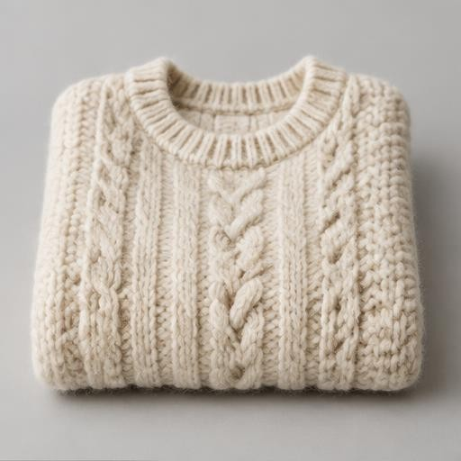
A fibra é lavada, fiada e tricotada. O friso da lã ajuda a reter ar e conservar o calor.
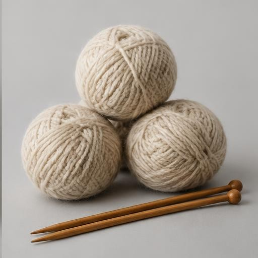
Da tosquia à fiação, a lã se transforma em matéria-prima para tricô, crochê e tecelagem.
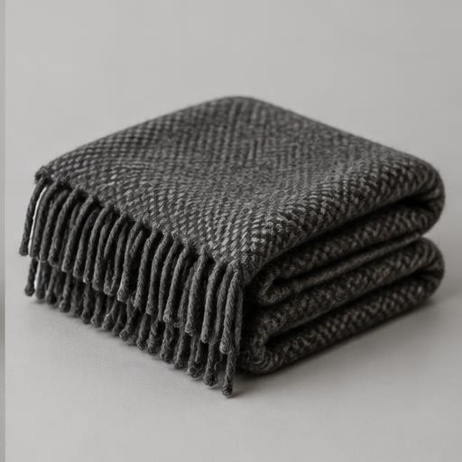
Fibras tecidas ou feltradas produzem peças duráveis que ajudam no isolamento térmico.
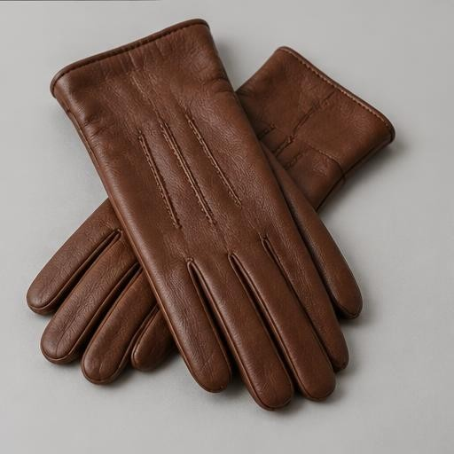
A pele ovina, após curtimento, pode virar couro macio usado em luvas, roupas e acessórios.
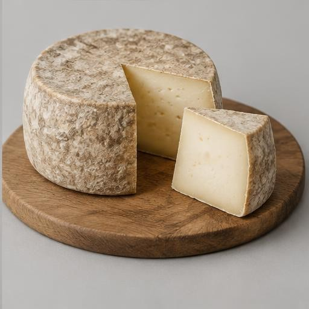
Leite rico em sólidos fornece queijos como Roquefort, Pecorino e várias especialidades artesanais.
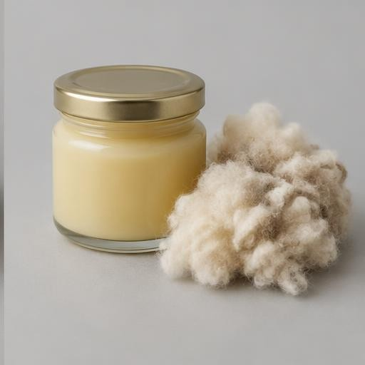
A gordura natural recuperada da lavagem da lã é purificada e usada em produtos cosméticos.
Ler prepara você. A prática completa o aprendizado. Os cuidados com cordeiros e a visita rural são atividades reais: nenhum texto substitui sua realização e a avaliação do instrutor.
Acompanhe um ou mais cordeiros até a comercialização ou até os 6 meses de idade, com autorização do responsável, orientação técnica e supervisão de adulto. Registre o cuidado de verdade, não apenas uma visita ocasional.
Sugestão de registro: data · peso · alimento · sinais de saúde · cuidado realizado · responsável. Castração, medicamentos e outros procedimentos não devem ser feitos por crianças.
Agende uma propriedade com ovinocultura, peça permissão para fotografar e siga as regras de higiene. Anote data, local, responsável, raças, tamanho do rebanho e finalidade da criação.
Depois da visita, escreva pelo menos 300 palavras sobre as atividades observadas e sua experiência. Relate somente o que aconteceu.
As anotações não são salvas automaticamente. Copie seu texto antes de fechar a página.
Um texto de estudo sobre a importância da atividade e um roteiro para construir o seu relato de visita.
A ovinocultura é a atividade de criar ovinos para obter carne, leite, lã, pele e outros produtos. Sua importância não está apenas naquilo que chega ao consumidor. Ela também envolve trabalho no campo, renda para famílias, conservação de conhecimentos tradicionais e aproveitamento de recursos alimentares que as pessoas não conseguem consumir diretamente. Por serem ruminantes, as ovelhas utilizam forragens e transformam parte desses alimentos em produtos úteis, desde que recebam uma dieta equilibrada e cuidados adequados.
Uma das características da atividade é a diversidade de raças e sistemas de produção. O Merino é conhecido pela lã fina, enquanto o Dorper se destaca pela carne. No Brasil, o Santa Inês tem importância na produção de carne e pele, especialmente em ambientes quentes. Linhagens leiteiras de Lacaune fornecem leite para queijos. Essa variedade mostra por que a escolha de uma raça precisa considerar clima, alimento disponível, objetivos da propriedade e mercado comprador, em vez de se basear apenas na aparência do animal.
A criação pode ocorrer em pastagens, em sistemas com suplementação ou em confinamento. Em todos eles, são necessários água limpa, abrigo adequado, controle da lotação e acompanhamento sanitário. O manejo deve respeitar a natureza gregária dos ovinos e evitar situações de medo, isolamento ou dor. A atenção aos cordeiros é especialmente importante: colostro, proteção no nascimento, alimentação progressiva e desmame bem planejado influenciam a sobrevivência e o crescimento.
A atividade também apresenta desafios. Verminoses, doenças dos cascos, problemas nutricionais e mortalidade de crias podem reduzir o bem-estar e os resultados. Por isso, o criador precisa de assistência veterinária, registros e prevenção. O uso responsável de medicamentos, com respeito aos períodos de carência, protege tanto os animais quanto as pessoas que consomem seus produtos. A comercialização precisa observar as exigências sanitárias e legais; o abate destinado à venda deve ocorrer em estabelecimento sob inspeção.
Do ponto de vista ambiental, o pastejo bem planejado pode integrar diferentes atividades e aproveitar áreas adequadas à produção de forragem. Entretanto, excesso de animais causa degradação, erosão e maior exposição a parasitas. Não se deve apresentar qualquer criação como automaticamente sustentável: o resultado depende das decisões de manejo, da água, do solo e do destino dos resíduos. Para o desbravador, conhecer a ovinocultura é uma oportunidade de desenvolver responsabilidade, observação, cooperação e respeito à vida. Aprender sobre o rebanho significa compreender que produzir e cuidar devem caminhar juntos.
Texto com mais de 300 palavras para estudo. Prepare sua própria apresentação escrita de pelo menos 300 palavras ou oral de 5 minutos.
Apresentação. Comece identificando a data, a propriedade, o município e quem recebeu o grupo, sem publicar informações privadas sem autorização. Explique por que a visita foi realizada, qual é a finalidade da criação e quais raças você realmente viu. Descreva o número aproximado de animais somente se essa informação tiver sido fornecida ou conferida. Diga como o responsável apresentou a propriedade e quais perguntas você levou para a conversa.
Instalações e ambiente. Conte como eram o abrigo, os piquetes, as cercas, os cochos e os bebedouros. Observe se havia sombra, drenagem e espaço para descanso. Compare o que encontrou com os conhecimentos deste caderno, sem afirmar que mediu algo que não mediu. Registre como os grupos eram separados e se você conheceu maternidade, enfermaria ou área de quarentena. Se algum setor não foi visitado, deixe isso claro.
Rotina produtiva. Descreva os alimentos utilizados, o manejo do pasto e a preparação para épocas de menor oferta de forragem. Explique o que o criador contou sobre reprodução, partos, amamentação, desmame e crescimento dos cordeiros. Diferencie atividades que você observou daquelas que apenas foram explicadas. Inclua como os produtos são comercializados, se esse tema foi abordado, e que registros a propriedade utiliza para acompanhar os animais.
Saúde e bem-estar. Relate as medidas preventivas apresentadas: vacinação, exames, manejo de parasitas, inspeção dos cascos, higiene e assistência veterinária. Não diagnostique animais a partir de uma impressão. Você pode registrar sinais observados e a explicação do profissional. Conte quais cuidados de segurança foram exigidos dos visitantes e como a condução dos ovinos evitava medo ou acidentes. Informe também como o grupo respeitou as regras sanitárias da propriedade.
Experiência pessoal e conclusão. Finalize dizendo do que participou, o que mais chamou sua atenção, quais ideias mudaram e quais dúvidas permaneceram. Relacione a experiência à responsabilidade necessária para cuidar de um ser vivo. Use exemplos concretos do seu dia, e não uma história imaginada. Revise o texto para garantir pelo menos 300 palavras, acrescente fotografias autorizadas e peça ao instrutor que confira a realização da atividade. Este roteiro orienta a escrita, mas não é um relato de visita realizada.